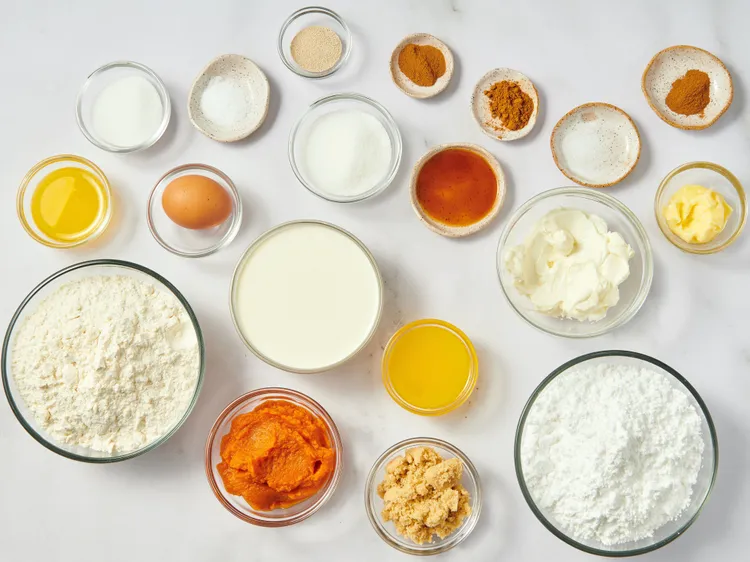
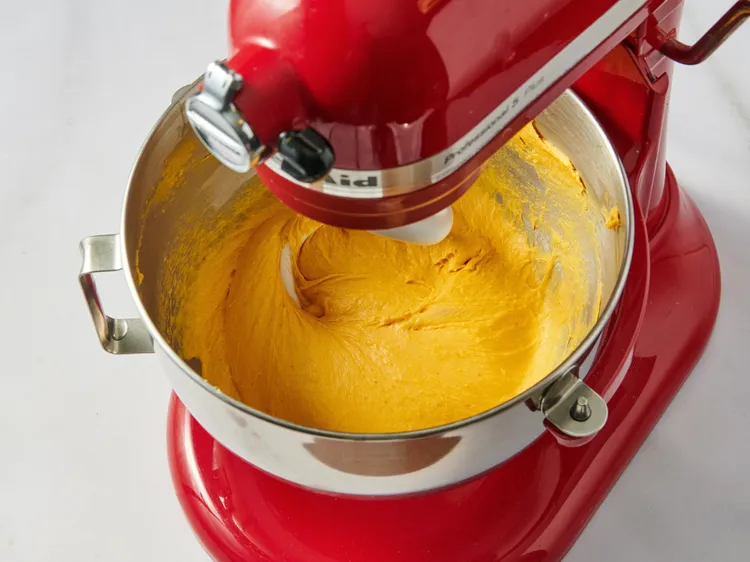
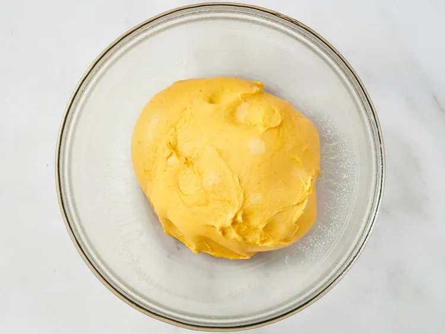
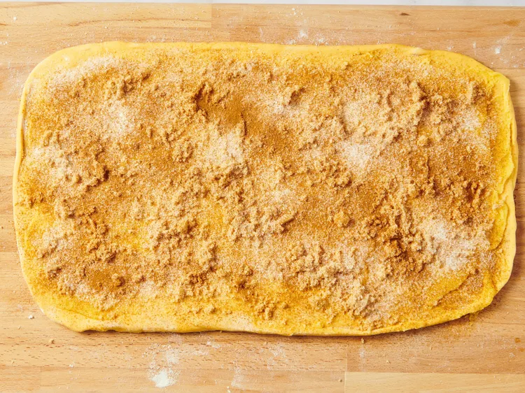
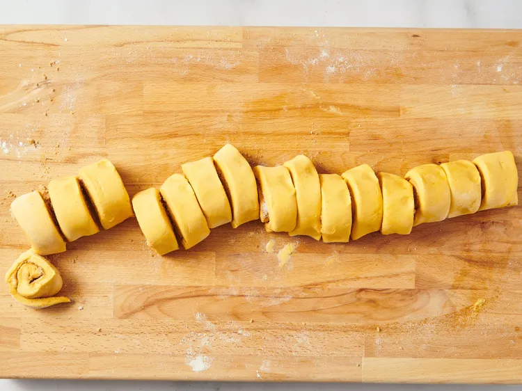
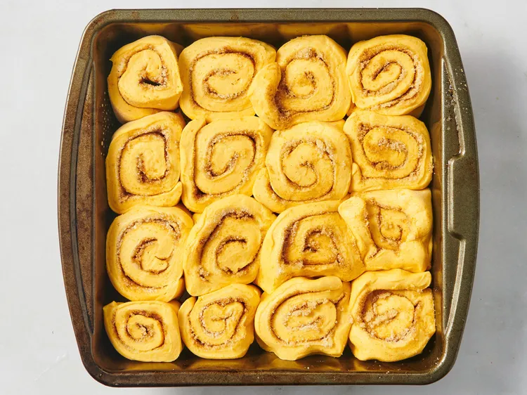
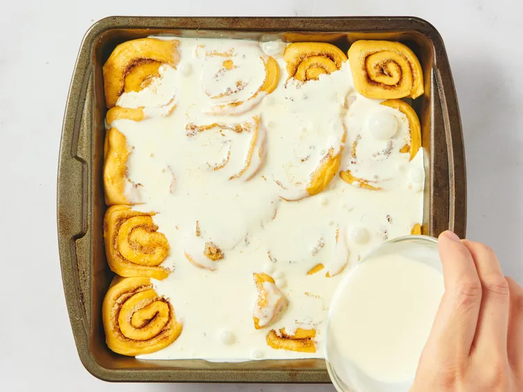
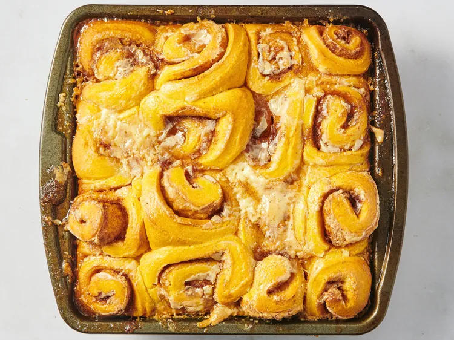
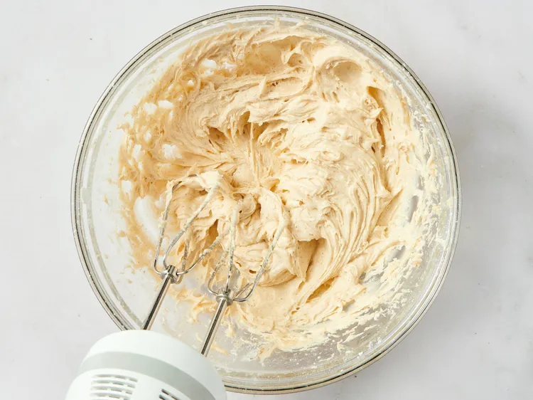

Булочки с корицами с тыквенными разборками вот-вот станут вашим следующим любимым осенним выпечкой! Эти мини-булочки с корицей — идеальный подарок для Friendsgiving, и их очень легко собрать! Очень мягкая, воздушная и сверху покрыта крем-кремом из корицы — что тут не полюбить?
Время подготовки: 20 мин
Время готовки: 35 мин
Время подьема: 3 часа
Общее время: 3 часа 55 мин
Порции: 12
Состав
Тесто
1 стакан жирных сливок, разделённых
1/2 стакана тыквенного пюре
1 1/2 чайной ложки растворимых дрожжей
3 столовые ложки белого сахара
1 большое яйцо
2 3/4 стакана хлебной муки (340 грамм)
2 столовые ложки сливочного масла, растопленное
1 чайная ложка кошерной соли
Начинка
3 столовые ложки сливочного масла, размягчённого или растопленного
1/4 чашки коричневого сахара
1/4 чашки белого сахара
1 чайная ложка молотой корицы
1 чайная ложка тыквенной специи
Глазурь
4 унции сливочного сыра, размягченный
2 столовые ложки масла, размягчённое
2 стакана кондитерского сахара
1/2 чайной ложки ванильного экстракта
1 чайная ложка молотой корицы
1 щепотка соли
Инструкции
Соберите все ингредиенты. Смажьте форму для выпечки размером 8x8 дюймов маслом или кулинарным спреем и отложите в сторону.

Для теста нагрейте 1/2 стакана сливок до нагрева на ощупь и вылейте в миску штатного миксера. Добавьте тыквенное пюре, дрожжи, 3 столовые ложки сахара и яйцо. Добавьте хлебную муку, масло и соль и замесите на низкой скорости 9–10 минут.

Если хотите печь булочки в тот же день, дайте тесту подняться до двойного увеличения, минимум 2 часа. В противном случае положите в контейнер и охладите на ночь.

Чтобы наполнить булочки, на следующий день раскатите тесто в прямоугольник размером 8x16 дюймов. Равномерно намазывайте масло, затем посыпьте коричневым сахаром, 1/4 стакана белого сахара, корицей и тыквенными специями.

Скрутите тесто в бревно (с более длинного края) и нарежьте на 16 маленьких рулочек.

Положите рулеты в форму для выпечки и накройте плёнкой. Дайте им подняться час — не торопитесь, лучшее доказательство означает более пушистые булочки!

Разогрейте духовку до 350 градусов по Фаренгейту (180 градусов Цельсия) ближе к концу подъёма. Непосредственно перед выпечкой вылейте оставшуюся половину чашки жирных сливок поверх булочков.

Запекать в разогретой духовке до лёгкого подрумянивания и подъёма — 34–36 минут.

А для глазури смешайте сливочный сыр, масло, сахарную пудру, корицу, ванильный экстракт и щепотку соли с помощью электрического миксера до однородности.

Дайте булочкам с корицей немного остыть, затем нанесите глазурь. Наслаждайтесь в тепле для наилучшего опыта. Остатки разогревают в микроволновке примерно 30 секунд.